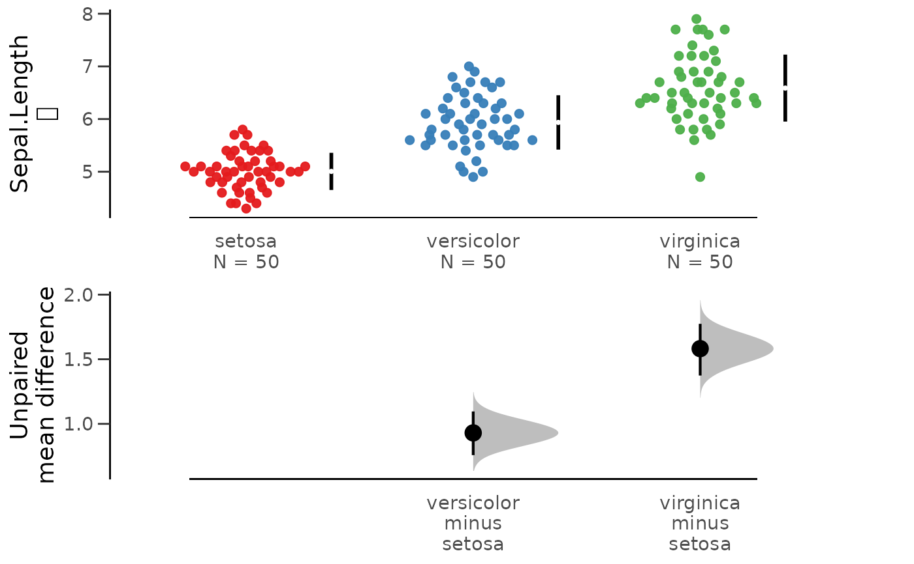
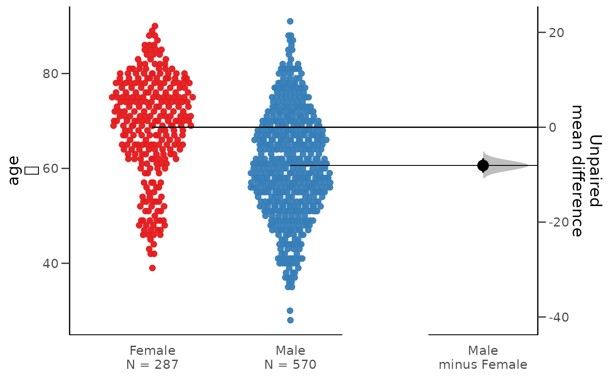
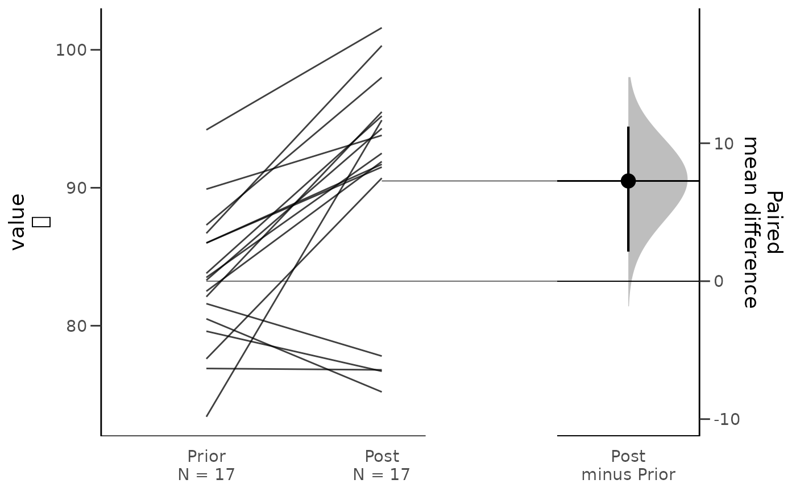
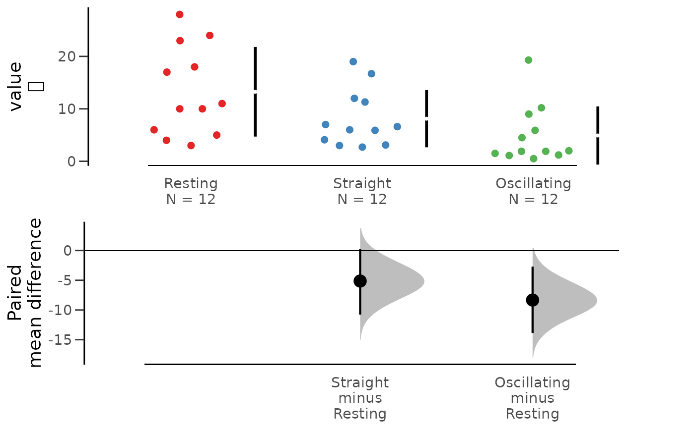

Prepare data for analysis with dabestr and bootstrap-coupled estimation of effect size
Source:R/bootCompare.R
bootCompare.RdPrepare data for analysis with dabestr and bootstrap-coupled estimation of effect size
This function is a wrapper function for dabest and mean_diff.
You can select variables for dabest function using dplyr::select.
This function also compatible with wide-form data.
Arguments
- .data
A data.frame or tibble
- ...
Column names in .data
- idx
A vector containing factors or strings in the grouping columns.
- paired
logical If TRUE, the groups are treated as paired samples.
- id.column
Default NULL. A column name indicating the identity of the datapoint if the data is paired. This must be supplied if paired is TRUE.
Value
A dabest_effsize object with 10 elements. Details are described in mean_diff.
Examples
require(dplyr)
require(dabestr)
#> Loading required package: dabestr
#> Loading required package: magrittr
bootCompare(iris,Species,Sepal.Length) %>% plot()

# \donttest{
data(acs,package="moonBook")
acs %>% select(sex,age) %>% bootCompare() %>% plot()

data(Anorexia,package="PairedData")
bootCompare(Anorexia,Prior,Post)
#> dabestr (Data Analysis with Bootstrap Estimation in R) v0.3.0
#> =============================================================
#>
#> Good morning!
#> The current time is 07:54 AM on Monday January 31, 2022.
#>
#> Dataset : longdf
#> X Variable : name
#> Y Variable : value
#>
#> Paired mean difference of Post (n = 17) minus Prior (n = 17)
#> 7.26 [95CI 2.14; 11.2]
#>
#>
#> 5000 bootstrap resamples.
#> All confidence intervals are bias-corrected and accelerated.
#>
bootCompare(Anorexia) %>% plot()

data(Blink2,package="PairedData")
Blink2 %>% dplyr::select(2:4) %>% bootCompare() %>% plot()

bootCompare(Blink2,Resting,Straight,Oscillating,paired=FALSE)
#> dabestr (Data Analysis with Bootstrap Estimation in R) v0.3.0
#> =============================================================
#>
#> Good morning!
#> The current time is 07:54 AM on Monday January 31, 2022.
#>
#> Dataset : longdf
#> X Variable : name
#> Y Variable : value
#>
#> Unpaired mean difference of Straight (n = 12) minus Resting (n = 12)
#> -5.13 [95CI -10.8; 0.233]
#>
#> Unpaired mean difference of Oscillating (n = 12) minus Resting (n = 12)
#> -8.33 [95CI -13.9; -2.71]
#>
#>
#> 5000 bootstrap resamples.
#> All confidence intervals are bias-corrected and accelerated.
#>
# }